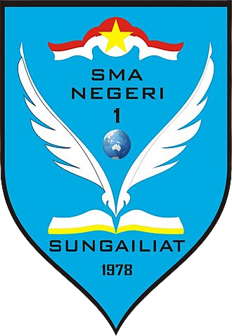
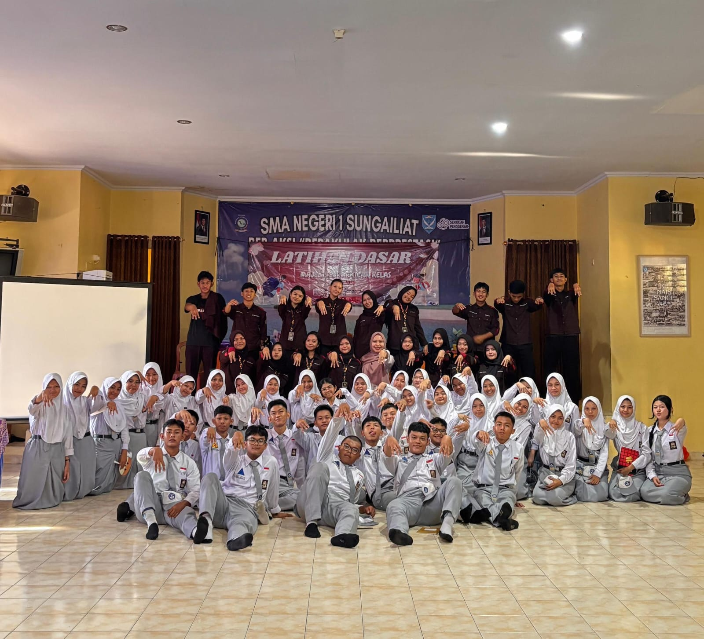
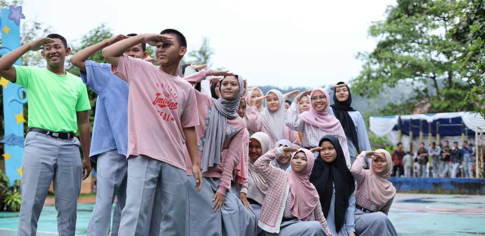
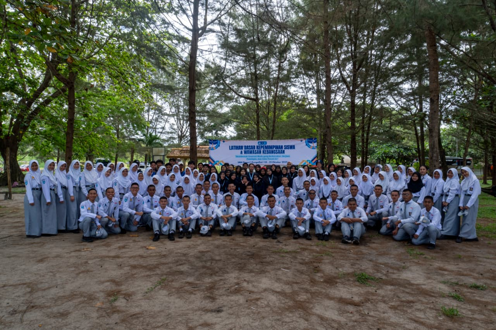
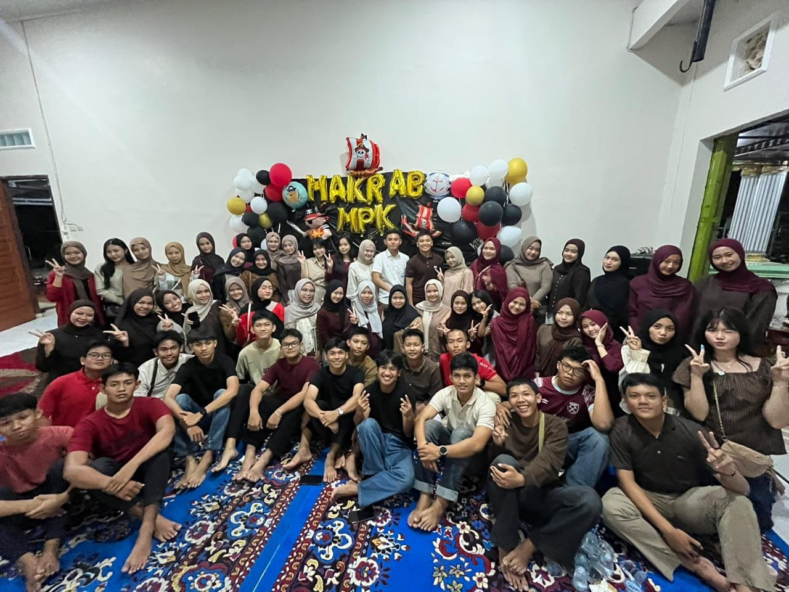
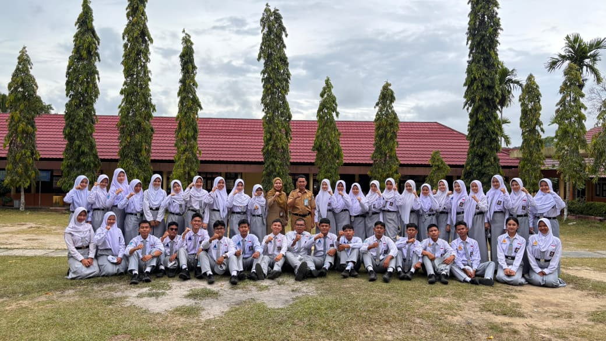

1. Mempersiapkan kader penerus perjuangan bangsa dan pembangunan nasional dengan memberikan bekal keterampilan, kesegaran jasmani, daya kreasi, patriotisme, kepribadian, dan budi luhur.
2. Melibatkan siswa dalam proses kehidupan berbangsa dan bernegara serta pelaksanaan pembangunan nasional.
3. Membangun jiwa berorganisasi dan kepemimpinan.
4. Meningkatkan mutu lembaga MPK untuk mendukung program kerja sekolah.
2025 / 2026
Masa bakti MPK SMAN 1 Sungailiat periode 2025/2026 merupakan waktu pengabdian kepengurusan dalam menjalankan tugas dan tanggung jawab organisasi. Selama masa bakti ini, MPK berkomitmen untuk menjalankan fungsi pengawasan, menyalurkan aspirasi siswa, serta mendukung terciptanya lingkungan sekolah yang aktif dan demokratis.
Anggaran Dasar dan Anggaran Rumah Tangga yang menjadi pedoman kerja MPK masa bakti 2025 / 2026. Dokumen ini menjadi acuan dalam menjalankan kegiatan organisasi agar berjalan tertib, terarah, dan sesuai dengan aturan yang berlaku.
Nopri Kurniawan, S.Pd
Fadillah Ilmi Rabbani XI.4
Fariz Alghifariy XI.10
Aghryelle Naquita Chriztina X.5
Anisa Ageng A N XI.
Kirana Dealovefa XI.7
Ketua: Alissa Putri Maharani XI.6
Ketua: Azkha Al Rizqy XI.5
Ketua: Arumi Khairunnisa XI.7
Struktur MPK periode 2026/2027 akan segera hadir
Merumuskan, membahas, dan menetapkan AD/ART (Anggaran Dasar/Anggaran Rumah Tangga).
Mengawasi AD/ART MPK yang telah disusun dan ditetapkan bersama.
Menginformasikan setiap permasalahan AD/ART.
Melaksanakan pemilihan Ketua OSIS.
Menjadi pengadil bagi anggota OSIS dan MPK yang bermasalah.
Mengawasi dan meninjau langsung kegiatan OSIS.
Merumuskan dan menyelenggarakan agenda MPK SMA Negeri 1 Sungailiat.
Mengawasi dan meninjau langsung kegiatan pengukuhan ekstrakurikuler sekolah.
Menerima, menampung, dan menindaklanjuti aspirasi siswa(i) SMA Negeri 1 Sungailiat.
Menjaga informasi yang dianggap rahasia.
Membantu OSIS dalam melaksanakan program kerja.
Mendengar, mengevaluasi, dan menerapkan laporan pertanggungjawaban OSIS setiap pertengahan dan akhir periode kepengurusan.
Dokumentasi kegiatan periode 2026/2027 akan segera hadir
Sampaikan aspirasi, kritik, dan saran untuk kemajuan serta evaluasi kegiatan SMAN 1 Sungailiat
Isi Aspirasimu Di sini